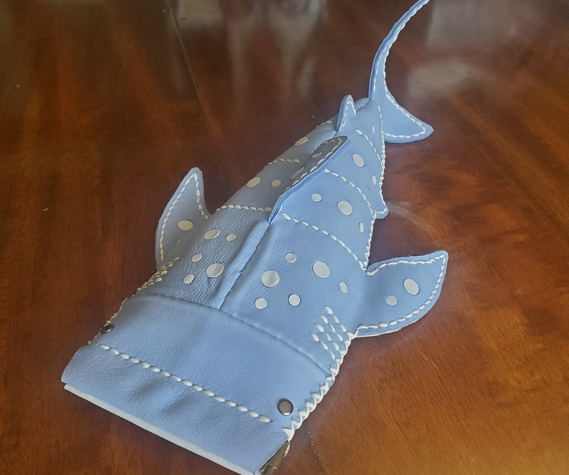
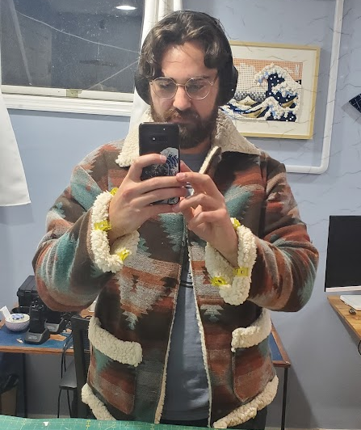
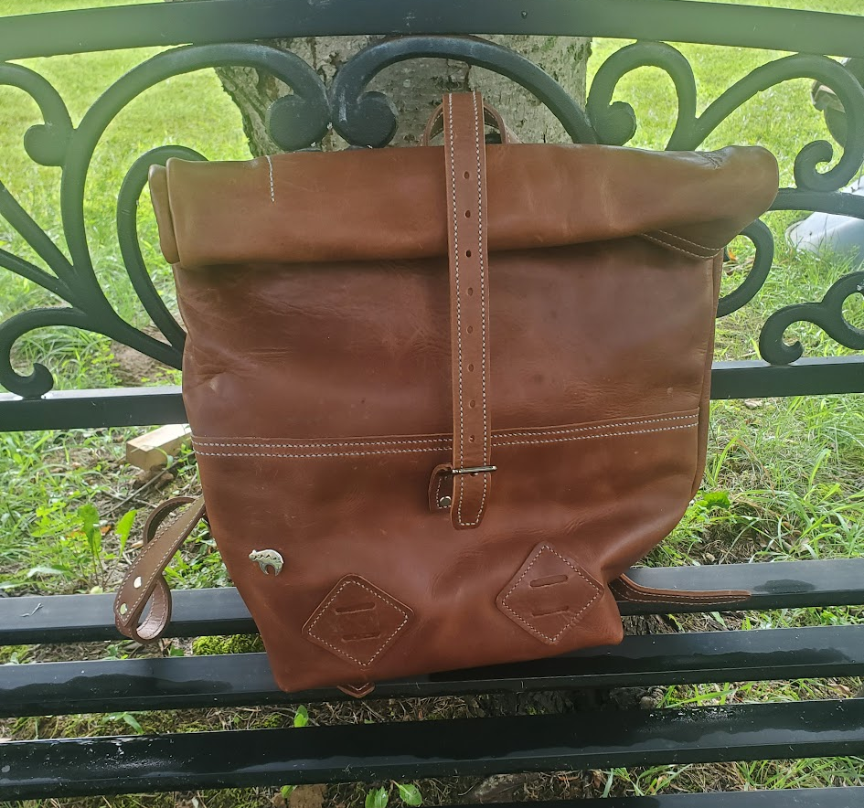

I love to use unconventional materials as often as I can, and I think
that often in engineering, fabrics get overlooked. In each of these
different projects I have learned new and different techniques. I
started off my desire to make things when I learned to sew at 10 years
old to make different stuffed animals. I have kept that skill alive by
both hand and machine sewing. I started leather working recently with
the whale shark handbag and the leather backpack. In both projects I
sourced the leather from a local leather store and used a pattern to
make the item. The whale shark was difficult because it used thin
leather and glue which can easily stain. The backpack was difficult
because of the number of stitches and some of the custom parts I added
such as the laptop holder.
I got back into sewing fabrics
after seeing a lovely fabric in Jo-Ann's. I knew that I needed to make a
jacket from it. Men's templates are difficult to come by, and I had to
modify the pattern to include a sherpa lining as well as a rolled
lining.

